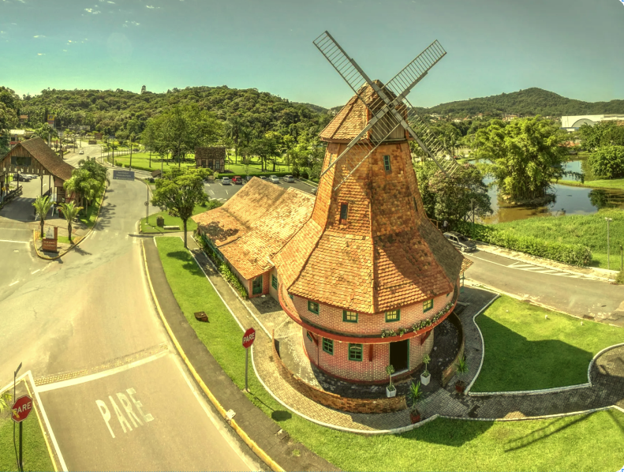
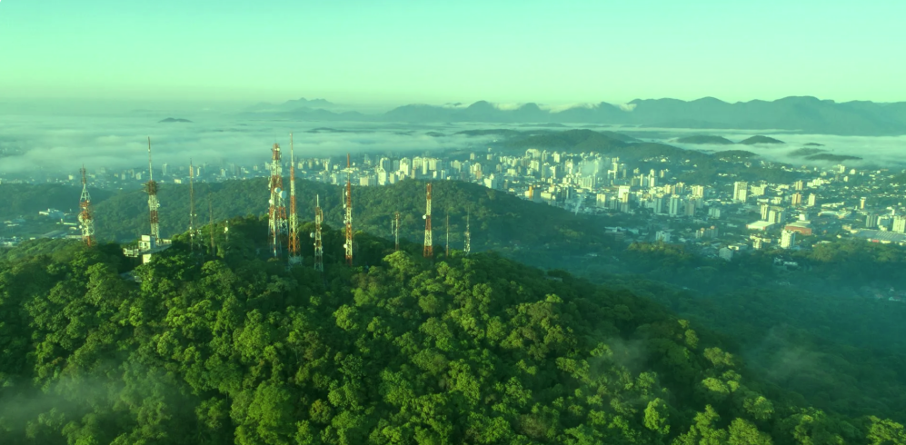

Coleta de resíduos industriais e comerciais
Coleta de resíduos perigosos e hospitalares
Coleta de resídios químicos
Coleta e reciclagem de resíduos de construção civil
Atendimento a emergência ambiental
Depósito temporário e destinação final de resíduos
Recolhimento resíduios mobiliários (Sofa, colchao, mesas)
Tratamento de efluentes
Hidrojateamento, sucção a vácuo e desobstrução
Compostagem acelerada de resíduos orgânicos
Serviços especiais em altura e locais confinados

Mapas Coleta de Resíduos Município de Joinville
47-99999-9999
coletaderesiduos@joinville.com.br